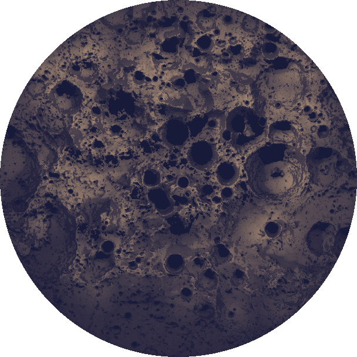

Explore the data sources, scoring method, results, and limitations behind Lunaria's provisional south-polar screen. The figures below describe one cached analysis run; they are not a live forecast.

Weighted suitability80–90°S · 290,364 valid cells
00
Data sources and method
Source products, the two-stage screening method, scoring assumptions, and commands for rebuilding the analysis locally.
Data Sources
Source data
Four inputs support the south-polar screen across 80°S–90°S:
LOLA 1 km Polar DEM (LDEM_80S_1000M):
Polar stereographic elevation grid providing elevation and slope metrics across all 290,364 valid cells.
JPL Horizons Sun/Earth Ephemeris (2024–2026):
Aligned Sun and Earth geometry at 2,925 six-hour epochs per body. The dashboard contains 17,550 region-time records: one record for each of six regions at each epoch.
NASA Moon Trek LOLA export, ~148.44 m/px:
Server-resampled terrain from LRO_LOLA_DEM_SPole75_30mp_v04 used to refine the six candidate regions. The missing 5 m Barker/LOLA terrain is not used.
Permanently shadowed region catalogue:
The supplied centroid and area estimates provide an approximate distance-to-PSR scoring proxy, not a confirmed water-resource measurement.
Methodology
Algorithmic Data Treatment
Five steps turn the source rasters and ephemerides into a provisional regional ranking:
1. Full-cap screen: Evaluate 290,364 valid 1 km cells. The highest available source pixel in each cell acts as an optimistic observer; 96 azimuth profiles extend to 60 km.
2. Celestial geometry: Compare Sun and Earth vectors against terrain horizons at 2,925 aligned six-hour epochs from 2024 through 2026.
3. Region refinement: Recompute terrain horizons and Sun/Earth geometry for all source pixels in the six shortlisted regions at the available ~148.44 m/px resolution.
4. Weighted score: Normalize six criteria and combine them with a weighted geometric mean, S = ∏ uiwi. Utilities are floored at 0.01; the score is a screening aid, not a mission decision.
5. Weight sensitivity: Run 1,000 Dirichlet(1,...,1) weight draws (seed 42) to measure how often each region ranks first under varied priorities.
Reproduction
How to Recreate the Data Pipeline Locally
From the repository root, install the analysis dependencies, rebuild the cached outputs, and run the offline tests:
Rebuild and verifyPython 3
# Install the project-specific scientific dependencies
python3 -m pip install -r requirements-polar.txt
# Rebuild the screening outputs and dashboard data
python3 scripts/build_polar.py
# Run the offline test suite
python3 -B -m unittest discover -s tests -v
01
Source & run metadata
Generation context for every processed number below.
02
Provisional recommendation
Ranked result, winning region score, and rank-agreement statistics.
03
Provisional seed
The single coordinate that deserves a closer look.
This coordinate is a provisional source-pixel seed, not a landing pad. 5 m Barker/LOLA or 1–2 m LROC terrain is still required.
04
Two-stage refinement
Stage-one cell screen and stage-two refined resolution.
05
Decision weights
Criteria weights applied to the weighted geometric mean.
06
Refined regions
All candidate regions produced by the polar screen.
07
Scoring policy
Headline scoring configuration and geometric floor.
08
Processed artifacts
Every file shipped by the pipeline, with labels and byte sizes.
Artifacts are listed in data/processed/ and data/raw/. Sizes are approximate totals where available.